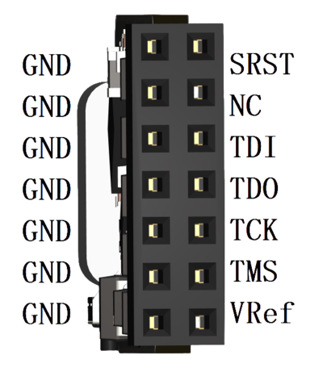
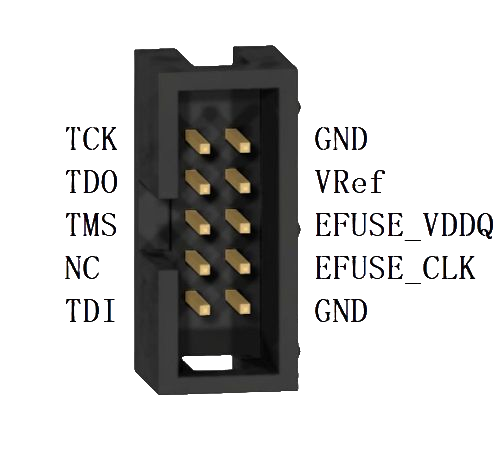
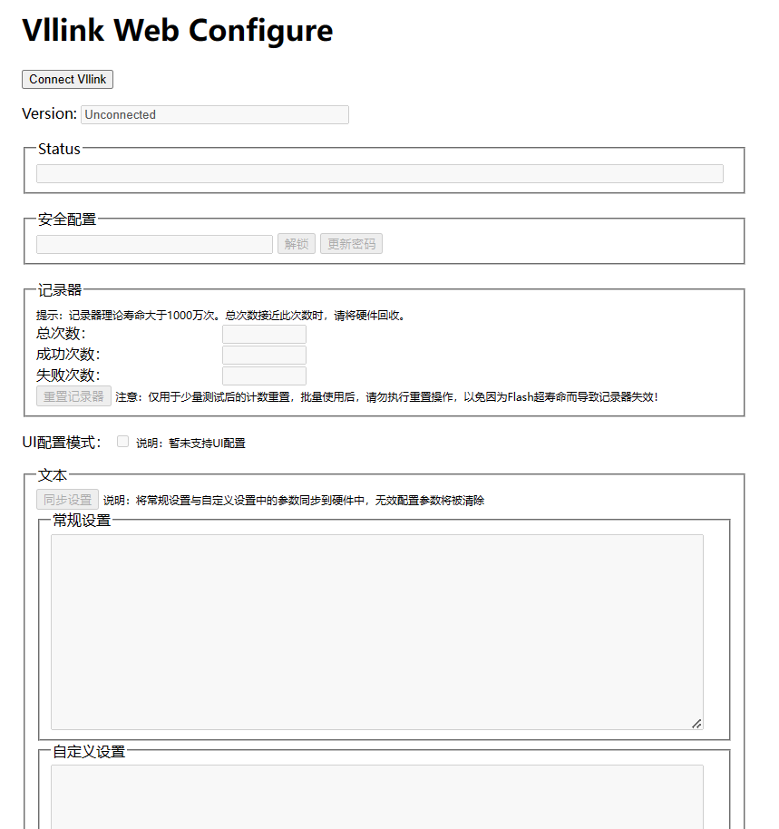
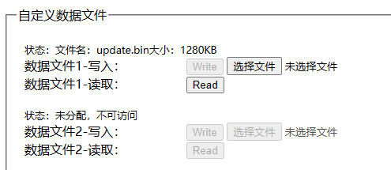

Vllink FPGA 快速上手
Vllink Hercules是为京微齐力定制的编程、调试工具
一、调试接口定义
1.1 JTAG-HS3接口

接口 |
介绍 |
拓展功能 |
|---|---|---|
SRST |
保留 |
EFuse编程时钟输出口 |
NC |
保留 |
EFuse编程电压输出口 |
TDI |
JTAG数据口 |
- |
TDO |
JTAG数据口 |
- |
TCK |
JTAG时钟口 |
- |
TMS |
JTAG模式口 |
- |
VRef |
参考电压输入口 |
- |
GND |
共地口 |
- |
1.2 京微齐力接口

接口 |
介绍 |
|---|---|
TCK |
JTAG时钟口 |
TDO |
JTAG数据口 |
TMS |
JTAG模式口 |
NC |
未连接 |
TDI |
JTAG数据口 |
GND |
共地口 |
VRef |
参考电压输入口 |
EFUSE_VDDQ |
EFuse编程电压输出口 |
EFUSE_CLK |
EFuse编程时钟输出口 |
GND |
共地口 |
二、功能简述
2.1 Hercules标准下载
[开发中]此接口协议兼容旧款
68013方案下载器，可对接原厂Fuxi开发工具使用
2.2 快速在线下载
此接口用于实现下载提速，支持Flash读写、Chip写等功能
在线下载，注意，此网页工具需要使用支持
WebUSB的浏览器打开，如Edge
2.3 离线编程器
此调试器可用于对Hercules芯片离线编程，包括Flash及Efuse
离线编程通过通用配置进行配置
支持手动烧录、自动烧录、数量限制、配置数据保护等特性
三、固件升级及恢复默认设置
3.1 固件升级
3.2 恢复默认设置
在调试器出现异常情况时，可通过以下操作恢复正常功能
参考
3.1确认已升级至最新固件打开通用配置
点击
Connect Vllink，在对话框中选中设备并点击连接将以下文本覆盖到
文本->常规设置栏下MODE= Mode_Quick_Switch= Vout= Vout_Key_Reset= Vout_Voltage_mV= CDC_Shell= Dap_Resp_Overtime_Discard= Srst_Clear_Attach_Write= Mac_Addr= Wireless_ATTR= Wireless_Host_Channel= Wireless_Host_SSID= Wireless_Host_Password=
将以下文本覆盖到
文本->自定义设置栏下Customize_Wireless_Host= Customize_Wireless_Device= Customize_DATA_AREA_SIZE= Customize_DATA_FILE1_NAME= Customize_DATA_FILE1_ATTR= Customize_DATA_FILE1_SIZE=0 Customize_DATA_FILE2_NAME= Customize_DATA_FILE2_ATTR= Customize_DATA_FILE2_SIZE=0 Customize_DATA_FILE3_NAME= Customize_DATA_FILE3_ATTR= Customize_DATA_FILE3_SIZE=0 Customize_DATA_FILE4_NAME= Customize_DATA_FILE4_ATTR= Customize_DATA_FILE4_SIZE=0 Customize_DATA_FILE5_NAME= Customize_DATA_FILE5_ATTR= Customize_DATA_FILE5_SIZE=0 Customize_DATA_FILE6_NAME= Customize_DATA_FILE6_ATTR= Customize_DATA_FILE6_SIZE=0 Customize_DATA_FILE7_NAME= Customize_DATA_FILE7_ATTR= Customize_DATA_FILE7_SIZE=0 Customize_DATA_FILE8_NAME= Customize_DATA_FILE8_ATTR= Customize_DATA_FILE8_SIZE=0 Customize_DATA_FILE9_NAME= Customize_DATA_FILE9_ATTR= Customize_DATA_FILE9_SIZE=0 Customize_CMD_INIT= Customize_CMD_POLL=
点击
同步设置对调试器重新上电，恢复默认设置完成
四、快速在线下载使用说明
4.1 准备工作
使用支持
WebUSB的浏览器打开在线下载调试器连接电脑，调试器通过牛角排线连接开发板
开发板上电
4.2 软件说明
在线下载界面如下：
连接调试器：点击
Connect Vllink Hercules，在对话框中选中设备并点击连接连接后，
Chip Info区域会显示当前开发板芯片类型，Flash容量Chip Info区域中的Auto Probe默认勾选，此选项会使调试器持续与开发板通讯，检测开发板状态Flash Download区域用于Flash下载，支持bin及acf格式的文件Flash Read区域用于Flash全片读取Chip Download区域用于Chip下载，下载完成后会自动运行，一般用于开发阶段快速运行码流，重新上电后此码流丢弃
4.3 示例 HME-H3
根据
4.1完成准备工作，参考4.2完成连接，Chip Info区域出现H3芯片信息Flash Download：选择需要烧录的固件，再点击Update，进度条跑完后即完成下载Flash Download->Auto Run：勾选此项将在下载完成后，自动运行所下载的固件Flash Read：点击Save，会将芯片中的Flash数据下载出来Chip Download：由于调试器连接目标芯片会导致芯片暂停，故在使能
Auto Run的下载完成或Chip Download完成之后，调试器将停止自动探测开发板。如需再次执行操作，请勾选Auto Probe，或手动点击Probe按钮
4.4 示例 HME-H1C02
根据
4.1完成准备工作，参考4.2完成连接，Chip Info区域出现H1C02芯片信息Flash Download：选择需要烧录的固件，再点击Update，进度条跑完后即完成下载Flash Download->Auto Run：勾选此项将在下载完成后，自动运行所下载的固件Flash Read：点击Save，会将芯片中的Flash数据下载出来Chip Download：由于调试器连接目标芯片会导致芯片暂停，故在使能
Auto Run的下载完成或Chip Download完成之后，调试器将停止自动探测开发板。如需再次执行操作，请勾选Auto Probe，或手动点击Probe按钮
4.5 示例 HME-HR02
根据
4.1完成准备工作，参考4.2完成连接，Chip Info区域出现HR02芯片信息Flash Download：选择需要烧录的固件，再点击Update，进度条跑完后即完成下载Flash Download->Auto Run：勾选此项将在下载完成后，自动运行所下载的固件Flash Read：点击Save，会将芯片中的Flash数据下载出来Chip Download：由于调试器连接目标芯片会导致芯片暂停，故在使能
Auto Run的下载完成或Chip Download完成之后，调试器将停止自动探测开发板。如需再次执行操作，请勾选Auto Probe，或手动点击Probe按钮
4.6 示例 HME-M5
根据
4.1完成准备工作，参考4.2完成连接，Chip Info区域出现M5芯片信息Flash Download：选择需要烧录的固件，再点击Update，进度条跑完后即完成下载Flash Download->Auto Run：勾选此项将在下载完成后，自动运行所下载的固件Flash Read：点击Save，会将芯片中的Flash数据下载出来Chip Download：由于调试器连接目标芯片会导致芯片暂停，故在使能
Auto Run的下载完成或Chip Download完成之后，调试器将停止自动探测开发板。如需再次执行操作，请勾选Auto Probe，或手动点击Probe按钮
4.7 示例 HME-M7
根据
4.1完成准备工作，参考4.2完成连接，Chip Info区域出现M7芯片信息Flash Download：选择需要烧录的固件，再点击Update，进度条跑完后即完成下载Flash Download->Auto Run：勾选此项将在下载完成后，自动运行所下载的固件Flash Read：点击Save，会将芯片中的Flash数据下载出来Chip Download：由于调试器连接目标芯片会导致芯片暂停，故在使能
Auto Run的下载完成或Chip Download完成之后，调试器将停止自动探测开发板。如需再次执行操作，请勾选Auto Probe，或手动点击Probe按钮
五、离线编程器配置说明
5.1 提示
离线编程器的使用较为繁琐，请在充分阅读本说明后进行配置，如遇到异常问题，请联系上游工程师。
如果是第一次使用，请先参考
3.2恢复出厂设置，然后按照下文中的示例进行一次测试，测试成功后再按照预想功能调整配置。
5.2 准备工作-配置
使用支持
WebUSB的浏览器打开通用配置调试器连接电脑
5.3 软件说明-总览
配置网页界面如下： 
Status：可以视为软件运行Log，用于排查异常情况安全配置：用于限制配置功能的访问，在设置密码之后，只有掌握密码才能读取或修改离线编程器中的配置参数及数据记录器：全局性的计数器，可限制命令的循环次数，一般用于限制烧录器次数文本-常规设置：调试器的常规配置文本，当调试器作为离线编程器使用时，此项保持默认即可文本-自定义设置：调试器的自定义配置文本，用于指定烧录文件的文件名、大小，以及配置循环执行的烧录命令
5.4 软件说明-烧录文件的配置
点击
Connect Vllink，在对话框中选中设备并点击连接下滑网页至
自定义设置栏配置项
Customize_DATA_AREA_SIZE=1280，表明此离线编程器提供了1280KB空间，即用于上传的bin文件应当不大于1280KB默认配置下，自定义文件应当全部为空，如下所示：
Customize_DATA_FILE1_NAME= Customize_DATA_FILE1_ATTR= Customize_DATA_FILE1_SIZE=0
在
自定义设置栏里，最多可配置9个文件，所有文件的总大小不得超过上述提到的1280KB，配置时，需要填入文件名及大小，其中大小单位为KB且是4的整数倍，不满足条件的配置参数将被自动清除，示例如下：Customize_DATA_FILE1_NAME=file1.bin Customize_DATA_FILE1_ATTR= Customize_DATA_FILE1_SIZE=256 Customize_DATA_FILE2_NAME=file2.bin Customize_DATA_FILE2_ATTR= Customize_DATA_FILE2_SIZE=512
在绝大多数情况下，可直接将所有空间分配到第一个文件槽，示例如下：
Customize_DATA_FILE1_NAME=update.bin Customize_DATA_FILE1_ATTR= Customize_DATA_FILE1_SIZE=1280
配置修改完成后，点击
同步设置，点击后注意观察配置文本的变化，无效配置将被清除。设置后，自定义数据文件会如下图所示： 数据文件1-写入：右侧的选择键可选定任意需要使用的文件，但其总大小不得超出上文中填入的Customize_DATA_FILE1_SIZE=1280即1280KB至此，已成功将码流文件上传至离线编程器
数据文件1-读取：右侧的Read键可将已写入的文件读出，可用于核验上传的文件注意：离线编程器不支持acf格式，可用Fuxi软件将acf转换为bin
5.5 软件说明-烧录命令的配置
点击
Connect Vllink，在对话框中选中设备并点击连接下滑网页至
自定义设置栏配置项
Customize_CMD_POLL=即为循环命令，默认为空，此命令修改后，需要先点击同步设置，再对编程器重新上电方可生效。配置项
Customize_CMD_POLL=示例及简要说明Customize_CMD_POLL=hercules auto H3 trig_button flash /data/update.bin 0x0 0x54321hercules：京微齐力芯片的编程命令auto：表示自动化执行方式H3：表示目标芯片为H3trig_button：表示通过按键触发编程操作flash /data/update.bin 0x0 0x54321：表示flash编程，编程文件为/data/update.bin，即上文上传的码流文件；0x0 0x80000表示目标flash的起始地址及长度，一般起始地址默认为0，长度根据码流文件的大小，长度不要求对齐
Customize_CMD_POLL=hercules auto H3 trig_vref flash /data/update.bin 0x0 0x54321trig_vref：表示通过检测VRef电压来自动识别目标目标板的接入，此方式无需按按键
Customize_CMD_POLL=hercules auto H3 trig_button efuse 0x00000000000000000000000000000000000000000000000000000000000000000000000000000000000000000000000000000000 0x000000000000000000000000000000000000000000000000000000000000000000000000000000000000000000000000000000FFefuse：表示efuse编程0x00000000000000000000000000000000000000000000000000000000000000000000000000000000000000000000000000000000：efuse命令之后的第一个十六进制数据为目标芯片当前的efuse值，只有匹配后，才会执行后续的编程操作0x000000000000000000000000000000000000000000000000000000000000000000000000000000000000000000000000000000FF：efuse命令之后的第二个十六进制数据为拟写入的efuse值
Customize_CMD_POLL=hercules auto H3 trig_button efuse 0x00 0xFF此命令为上一个命令的精简模式，精简规则：efuse十六进制值字符串中的
0x00可用0x表达，迭代直至最少4个字符，示例：0x00000000000000000000000000000000000000000000000000000000000000000000000000000000000000000000000000000000->0x000x00000000000000000000000000000000000000000000000000000000000000000000000000000000000000000000000000000001->0x010x00000000000000000000000000000000000000000000000000000000000000000000000000000000000000000000000000000201->0x02010x00000000000000000000000000000000000000000000000000000000000000000000000000000000000000000000000000003201->0x32010x000F0000000000000000000000000000000000000000000000000000000000000000000000000000000000000000000000003201->0x0F00000000000000000000000000000000000000000000000000000000000000000000000000000000000000000000000032010x00FF0000000000000000000000000000000000000000000000000000000000000000000000000000000000000000000000003201->0xFF0000000000000000000000000000000000000000000000000000000000000000000000000000000000000000000000003201
Customize_CMD_POLL=hercules auto H3 trig_button limit 5 flash /data/update.bin 0x0 0x54321limit 5：表示使能次数限制功能，执行编程命令前，将会检查记录器，若记录器成功次数大于等于参数5，即直接退出，不再进行编程操作；编程完成后，若成功，成功次数加一，若失败，失败次数加一
Customize_CMD_POLL=hercules auto H3 trig_button flash /data/update.bin 0x0 0x54321 efuse 0x00 0xFF在一次编程中完成flash编程及efuse编程
hercules命令的完整资料请访问Hercules 命令说明
5.6 软件说明-安全配置
点击
Connect Vllink，在对话框中选中设备并点击连接上锁：在
安全配置内的输入框里填入密码，如1234ABCDefgh!@#$，点击设置密码，即完成安全锁定编程器重新上电，即处于锁定状态，无法读取和更改配置
临时解锁：在
安全配置内的输入框里填入密码1234ABCDefgh!@#$，点击请先解锁，之后即可读取和更改配置关闭安全锁：先临时解锁，删除输入框中的密码，点击
更新密码，由于新密码为空，即关闭安全锁此功能主要为商业用途，故密码需妥善保管，如若忘记密码，不提供恢复手段，请将编程器销毁
此功能无安全承诺，对典型的旁路攻击无效
5.7 示例 HME-H3
准备
构建码流，并转换为bin文件
将以下文本填入
自定义设置中：
Customize_DATA_FILE1_NAME=update.bin
Customize_DATA_FILE1_ATTR=
Customize_DATA_FILE1_SIZE=1280
点击
同步设置点击
数据文件1-写入：后面的选择文件，选中码流bin文件，点击Write稍等片刻，待文本框及按键恢复可用状态
Flash编程
测试用bin文件长度为0x22cdc，将以下文本填入
自定义设置中：
Customize_CMD_POLL=hercules auto H3 trig_button limit 1000 flash autoreset /data/update.bin 0x0 0x22cdc
autoreset参数，开发板会在编程后自动运行limit 1000参数，可编程1000次
点击
同步设置将编程器重新上电
将编程器连上开发板，开发板上电，按一下编程器的按键，完成离线编程
Flash编程及Efuse编程
测试用bin文件长度为0x22cdc，将以下文本填入
自定义设置中：
Customize_CMD_POLL=hercules auto H3 trig_button limit 1000 flash autoreset /data/update.bin 0x0 0x22cdc efuse 0x00 0x01
autoreset参数，开发板会在编程后自动运行limit 1000参数，可编程1000次efuse 0x00 0x01参数，表示先用0x00与芯片的Efuse0比较，若匹配，再将0x01写入Efuse0
点击
同步设置将编程器重新上电
将编程器连上开发板，开发板上电，按一下编程器的按键，完成离线编程
5.8 示例 HME-H1C02
准备
构建码流，并转换为bin文件
将以下文本填入
自定义设置中：
Customize_DATA_FILE1_NAME=update.bin
Customize_DATA_FILE1_ATTR=
Customize_DATA_FILE1_SIZE=1280
点击
同步设置点击
数据文件1-写入：后面的选择文件，选中码流bin文件，点击Write稍等片刻，待文本框及按键恢复可用状态
Flash编程
测试用bin文件长度为0x54b0，将以下文本填入
自定义设置中：
Customize_CMD_POLL=hercules auto H1C02 trig_button limit 1000 flash autoreset /data/update.bin 0x0 0x54b0
autoreset参数，开发板会在编程后自动运行limit 1000参数，可编程1000次
点击
同步设置将编程器重新上电
将编程器连上开发板，开发板上电，按一下编程器的按键，由于测试文件很小，基本是瞬间亮起绿灯，完成离线编程
5.9 示例 HME-HR02
准备
构建码流，并转换为bin文件
将以下文本填入
自定义设置中：
Customize_DATA_FILE1_NAME=update.bin
Customize_DATA_FILE1_ATTR=
Customize_DATA_FILE1_SIZE=1280
点击
同步设置点击
数据文件1-写入：后面的选择文件，选中码流bin文件，点击Write稍等片刻，待文本框及按键恢复可用状态
Flash编程
测试用bin文件长度为0x6cb0，将以下文本填入
自定义设置中：
Customize_CMD_POLL=hercules auto HR02 trig_button limit 1000 flash autoreset /data/update.bin 0x0 0x6cb0
autoreset参数，开发板会在编程后自动运行limit 1000参数，可编程1000次
点击
同步设置将编程器重新上电
将编程器连上开发板，开发板上电，按一下编程器的按键，由于测试文件很小，基本是瞬间亮起绿灯，完成离线编程
Flash编程及Efuse编程
测试用bin文件长度为0x6cb0，将以下文本填入
自定义设置中：
Customize_CMD_POLL=hercules auto HR02 trig_button limit 1000 flash autoreset /data/update.bin 0x0 0x6cb0 efuse 0x00 0x01
autoreset参数，开发板会在编程后自动运行limit 1000参数，可编程1000次efuse 0x00 0x01参数，表示先用0x00与芯片的Efuse0比较，若匹配，再将0x01写入Efuse0
点击
同步设置将编程器重新上电
将编程器连上开发板，开发板上电，按一下编程器的按键，完成离线编程
5.10 示例 HME-M5
准备
构建码流，并转换为bin文件
将以下文本填入
自定义设置中：
Customize_DATA_FILE1_NAME=update.bin
Customize_DATA_FILE1_ATTR=
Customize_DATA_FILE1_SIZE=1280
点击
同步设置点击
数据文件1-写入：后面的选择文件，选中码流bin文件，点击Write稍等片刻，待文本框及按键恢复可用状态
Flash编程
测试用bin文件长度为0x2c3ac，将以下文本填入
自定义设置中：
Customize_CMD_POLL=hercules auto M5 trig_button limit 1000 flash autoreset /data/update.bin 0x0 0x2c3ac
autoreset参数，开发板会在编程后自动运行limit 1000参数，可编程1000次
点击
同步设置将编程器重新上电
将编程器连上开发板，开发板上电，按一下编程器的按键，由于测试文件很小，基本是瞬间亮起绿灯，完成离线编程